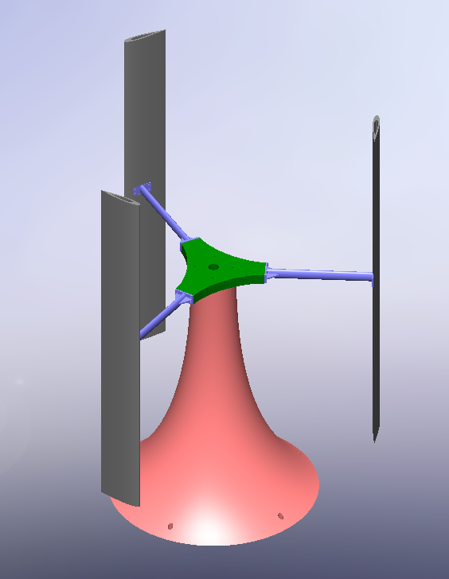
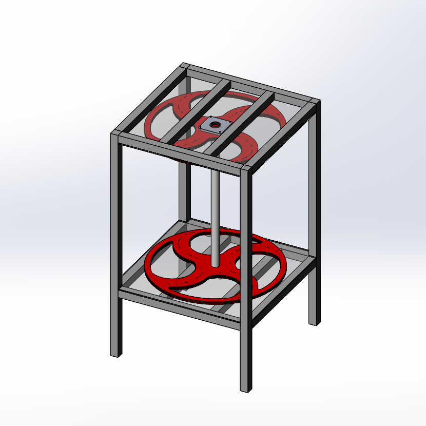

Wind Turbine (In Progress)
October 19, 2020 and Before
When my school announced the self-driven, hands on RED Capstone class
(Reasearch, Entrepeneurship, and Design), I jumped right on the opportunity.
This meant I could choose whatever I wanted to innovate, and naturally
I chose to engineer something. I focused in on renewable energy for this
project and narrowed it down to wind energy, mostly because of the impact
it can have on the envrionment, as well as all the fun challenges and
room for innovation in wintry and urban areas.
On the right you can see my prototype. This is a drag-based model —
less efficient, because if perfectly designed it can only go as fast as
the wind, but easier to design. I plan on transitioning to a lift-based
model for my final product, as it has various benefits, one being
efficiency.
You might notice this is a vertical-axis wind turbine, or a VAWT, instead
of the typical horizontal ones you see on commercial wind farms. This
style requires a lot less parts because the generator or gear box is
in line with the axis of rotation. At smaller wind levels, too, I expect
it to be more efficient.
This project has required and will require more planning with others,
specifically experts on wind energy and school and city officials. So far,
I have consulted with a commercial wind expert, a wind resource analyst,
and someone who has installed their own turbine. I am just about to start
talking with officials.
Quick Stats
Without gearing, this prototype can currently produce a max of 2.3V in controlled conditions,
and 1.1V in ambient, gorund-level air. Once
I install a gearbox and put it on the roof where the wind is stronger,
I expect 12-15V. The holes you see on the MDF plates are how I reduced
the weight of the turbine by 35%.
October 24, 2020

I pitched the project to my school administration and it was a success. It seems
that the turbine can go forward. There are a few more hoops to jump through
than I anticipated, namely the neighborhood committee that the school is in
and insurance, but I already heard back that insurance will not be an issue.
However, I do still plan on adhering to safety standards, of course.
I designed the model pictured to the right of a concept for a lift-based VAWT
using Solidworks CAD software.
I read some research and found that the specific blade I used for these, NACA 0015, is the
best for small lift-based turbines. However, my research also seemed to conclude
that Savonius (drag-based) designs are overall best for low winds. This is
something I would like to research on my own, but it is a bit of a relief because
Savonius models are easier to manufacture with the resources I have. I have some
ideas for innovation of those models as well.
November 17, 2020
This quarter, I have half as much time as last in the engineering shop and I
don't have RED class again until next quarter, but I've been using my free period
to work on the turbine. Before I go any further, I just want to note my thanks
for my teacher and everyone who has supported my project; this has been one of
the best experiences of my life.
With my now more limited time, I've been working on the gearing so that my
turbine can go from reading a small 1V to much higher limits. I finally got it
to work today, after many attempts that were simply too complicated for the MDF
plate I'm working with. I had a lot of problems with resistance and meshing
before I made the simple solution pictured last in the gallery. I spent a lot of time at first
working on my preferred gear ratio, ~20:1, with a gear train, but realized I had jumped the gun
and that I should just make sure I can get something that works. I now have an
11.11:1 ratio, and it actually might work for the final product! A lesson learned:
don't get ahead of myself.
The video at right is of my turbine with the gearing, and
at its maximum it read over 20V. Feel free to put it in full screen for better
detail.
February 8, 2021 (LATEST)

This quarter, I am back in my RED hour. I used my free hour every day last quarter to work on
small details such as making sure my gears mesh and planning the final model.
Now I have double the time to focus on the project.
I designed the model pictured on the right in SolidWorks, planning out what
my final model might look like. In doing so, I realized a lot of possible
opportunities for improvement. If I could mount the turbine so that the generator
was near the center of mass or higher on the shaft, I wouldn't need the entire
frame to support the top of the turbine. This is desirable primarily because it would take less
materials. I would then need to use a belt drive or no gears at all, however.
A belt drive in that context would require an entire restructuring of the turbine,
and having no gearing would lower the efficiency. I would like to reduce the amount
of materials used, however, so maybe on the top I could have a single diagonal beam
rather than a square. I also am ultimately planning to have a simple roof over
the structure, which comes naturally with my current plan and would be less integrated
otherwise. I might also find better ways to protect the bearings, generator, and
other vulnerable components from weathering.
While I have progressed in the construction of the turbine, I have also been
learning on the side about the most efficient ways to lay out my electrical components.
I also want to shift the goal of my project slightly to include a larger research
aspect. I could measure my turbine output and important data by using a Raspberry
Pi computer and sensors, which would incorporate programming. I could
also test ideas such as the efficiency of a funnel for incoming wind, or blocking wind
from hitting the wrong side of the blades.
Quick Stats
I have made my turbine much more efficient, so the current outlook for power output
is an average of 15 volts and 2 amps, so about 30 watts.